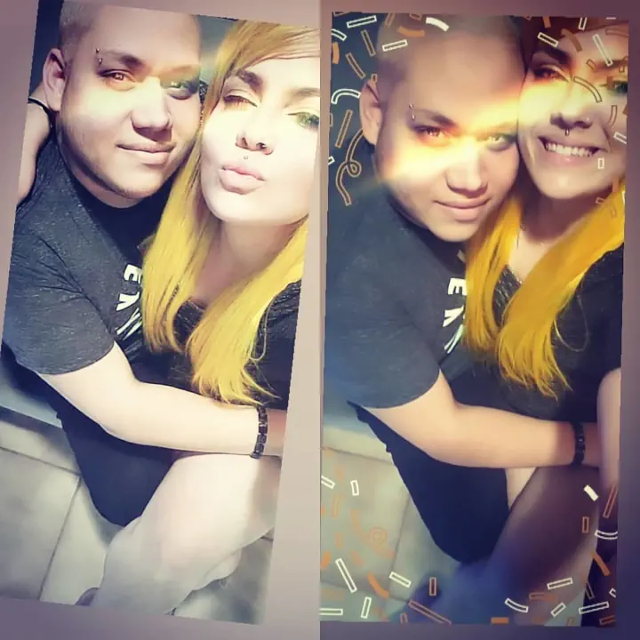
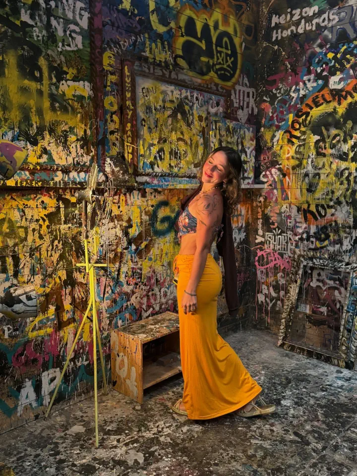
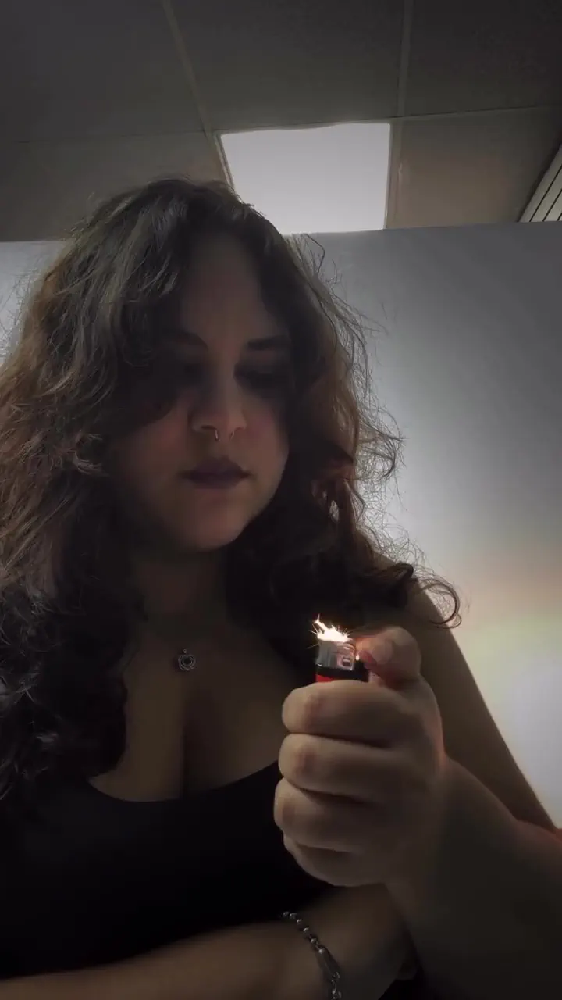

Ominous Tattoo Shop


Born and raised in Juana Diaz, he showed early signs of interest and talent regarding the arts. Attended high school in Luis Llorens Torres, where he would graduate and decide to pursue an artistic career. Angel attended briefly Atlantic University, while he was there, he decided to go back to the south so he could pursue becoming a tattoo artist.
He is self-taught and has over a decade of experience tattooing at his shop, where he works with other artists and his wife Mary, who is a piercer. He likes tattooing in black and grey but does not shy away from other styles. Today, you can find him at his shop where he will make your tattoo idea become a reality.

An avid lover of the sea, art and animals. Sofía graduated from RUM in which she pursued the degree of Animal Science with a Pre Veterinarian certification. She promises to tattoo you with the utmost dedication, passion and professionalism. She specializes in the dot shading tattoo style and spends her free time caring for animals. If you like any of her designs you see on this website, feel free to contact her so she can arrange an appointment for you.

The new artist in the shop. Talia loves all things art related and is an avid anime fan. Has years of experience making digital art and has now decided to dip her toes in tattooing. Talia is a fan of simplistic designs and as such, she specializes in line work and minimalistic tattoos. Feel free to arrange an appointment with her, she will gladly tattoo you.